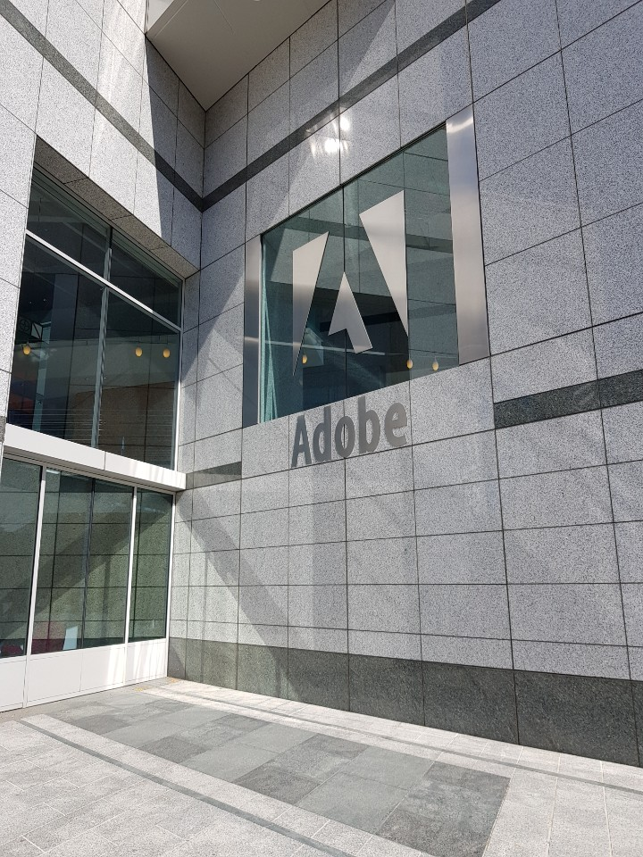
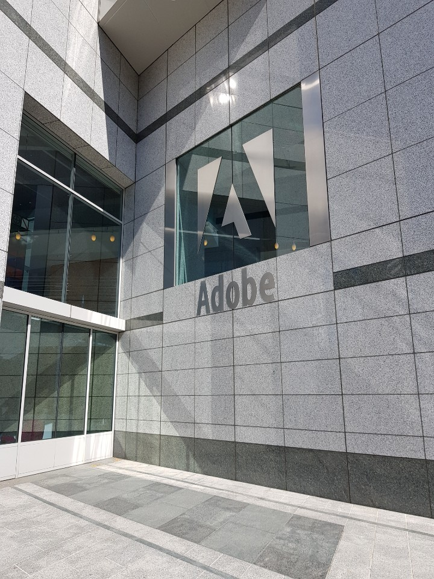
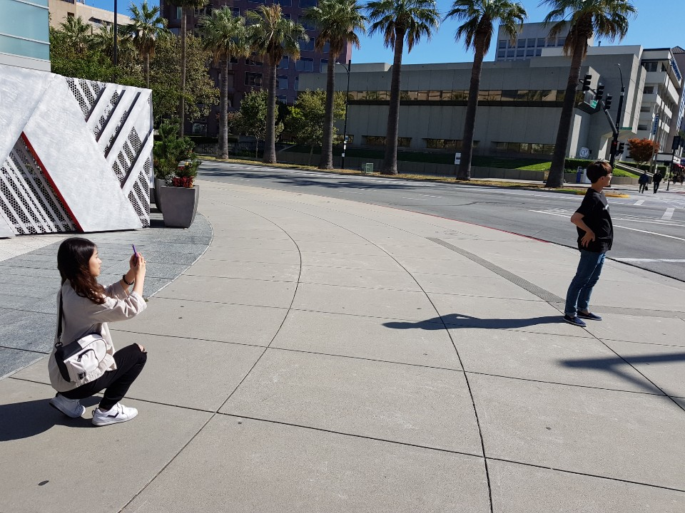
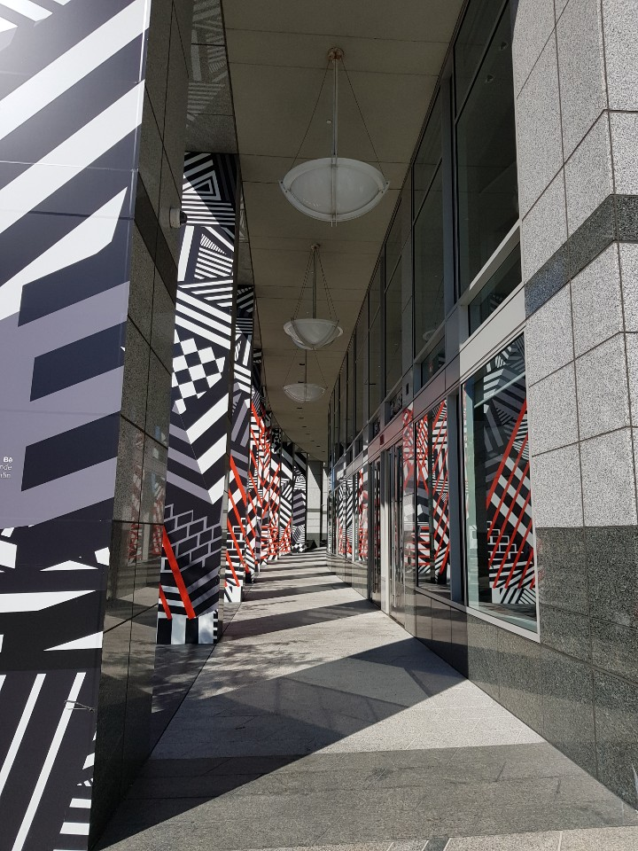
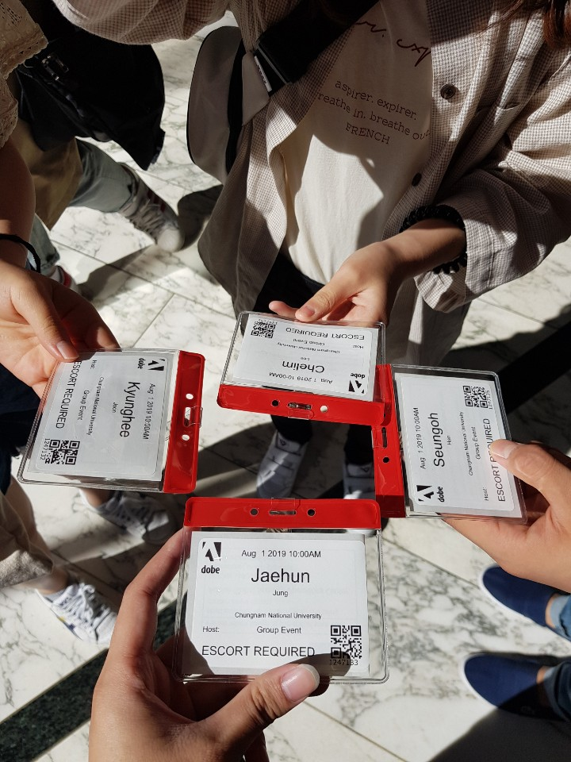
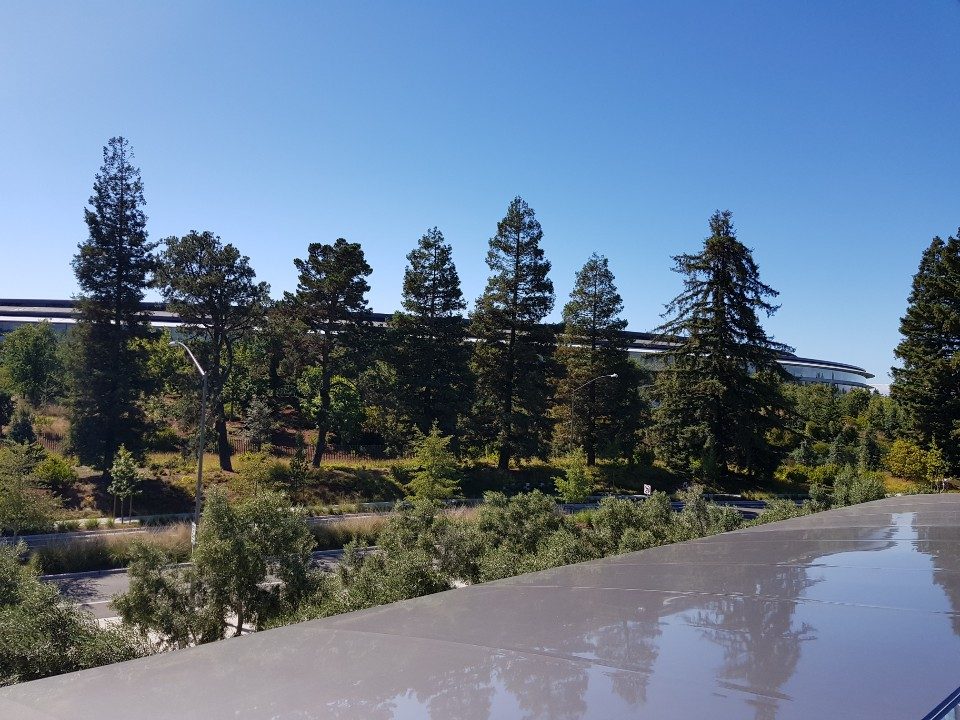
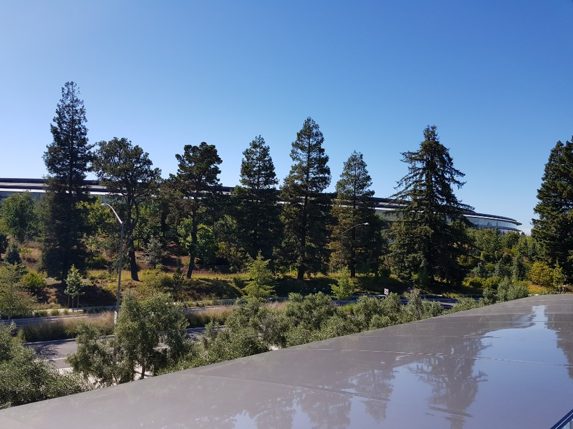

출발
오늘은 예성군의 아름다운 미소로 시작했습니다.
아직 시차적응에 성공하지 않았으나 어제보다 나은 컨디션으로 2일차를 시작하게 되었습니다.
오늘 갈곳은 Adobe본사, Google본사, Computer History Museum 그리고 Apple이였습니다.
Adobe
 

짱 멋진 어도비 본사 입구입니다.
 

요런 명찰을 주고서 견학을 시작했습니다.
한국의 회사들과는 다르게 자유로운 분위기라는 소문을 말로만 많이 들었지 직접 보기는 처음이었습니다.
식당이든 어디든 맘에드는 곳에 앉아 하고싶은 것들을 하는 직원들의 모습이 저를 매료시켰습니다. 그들을 보며 저도 모르게 하고싶은 일들을 자유로운 분위기속에서 하고있는 제 모습을 상상했던것 같습니다.
견학을 하면서 보았던
직원들을 위한 여러 시설들은 공통적으로 일을 더 재미있도록 만들어주는 이 회사의 분위기를 반영한다는 것을 알 수 있었습니다.
또한 마지막에 매니저와 미팅이 있다고 달려나가는 그분의 행복한 뒷모습까지..
이런 모든것들은 견학 시작부터 끝까지 미국에서 일하고싶다는 생각을 크게 만들어주었습니다.
구글 본사는 사람들이 엄청 많았습니다. 나중에 들어보니 전부 직원이라는데, 구글의 위상을 보여주는듯 했습니다.

구글만의 멋진 자전거도 볼 수 있었습니다.
구글은 본사 내부로 들어가지는 못했지만 구글 본사에서 일하시는 직원분들과 같이 점심을 먹으며 대화를 나누게 되었습니다. 그분들은 구글검색팀에서 일하
시는 분들이었습니다.
들었던 내용 중 가장 기억에 남는 부분은 어떤 프로그램을 개발할 때 한국의 환경에 맞춰서 개발하면 안된다는 말이었습니다.
'이게 무슨 소리지?'
한국은 인터넷이 엄청 빠른 환경임을 강조하시면서 더 많은 사용자를 끌어들이려면 더 많은 나라의 환경에 맞추어 개발을 해야한다는 말이었습니다.
그저 하드웨어적인 환경뿐 만 아니라 언어적인 환경까지 고려하면서 개발하는 것이 좋다라는 말에 그동안 좁은 생각을 하며 살았구나라고 느끼게 되었습니다.
그러면서 최근 구글이 인도쪽에서도 서비스하기위해 최소한의 기능만 넣은 구글서치, 구글맵을 개발한다는 말을 듣고, 왜 그런 말씀을 하셨는지 이해하게 되었습니다.
구글에서의 시간은 제 시야를 넓혀주었습니다.
Computer History Museum
무인자동차보면 지붕쪽에서 막 돌아가는 장치 있는데 거기에 쓰이는 장치와 그 장치가 인식한 저희들입니다.
온통 영어라서 힘들줄 알았는데, 예상보다 읽을거리가 많았습니다.
컴퓨터의 시초인 여러 계산기들부터 현재 개발되고있는 무인자동차까지의 역사를 모두 담고있는 박물관이었습니다.
컴퓨터과학적사고시간에 봤던 애니악, 무어의 법칙 이런것들에 대해 모두 적혀있었고, 다시 보면서 수업시간에 배웠던 역사들을 다시 되새기는 시간이었던것 같습니다.
Apple
 

3번째 사진에서 보이는 나무뒤 건물이 Apple본사입니다.
Apple도 Google과 마찬가지로 본사에 들어가지 못해 아쉬웠으나 대신 Apple스토어에서 AR장치로 Apple본사의 전체적인 건물을 구경할 수 있었습니다.
Golden Gate Bridge
왼쪽 사진을 찍다가 뒤돌아보니 오른쪽 사진의 멋진 풍경이 있었습니다.
살면서 한번쯤은 들어보셨을 금문교입니다.
흐린 날씨임에도 금문교는 생각보다 더 아름다웠습니다.
해풍이 강력하게 불어 꽤 춥기도 했으나 금문교와 그 뒤편으로 펼쳐진 바다와 하늘을보며 버틸 수 있었습니다.
저녁식사
왼쪽이 저녁을 먹게된 식당이고, 오른쪽은 밤거리 입니다.
그렇게 저녁식사를 마지막으로 하루가 끝이 났습니다.
느낀점
연수를 오기전에 기업탐방에 대한 내용은 솔직히 얼마나 멋지게 생겼을까?에 대한 호기심이였지 그 회사의 문화가 얼마나 아름다울까?에 대한 호기심은 아니
였습니다.
자유로운 분위기속 아이디어를 쉽게 공유하고, 그걸 구체화하는 작업을 한다는 문화들이 저를 얼마나 설레게 했는지 모릅니다.
또한 앞으로 개발을 할때의 시야를 더 넓힐 수 있었던 시간이었다고 생각합니다.
오늘은 이번 연수가 저를 더 크게 변화시켜줄것이라는 믿음이 생겼던 날이었습니다.